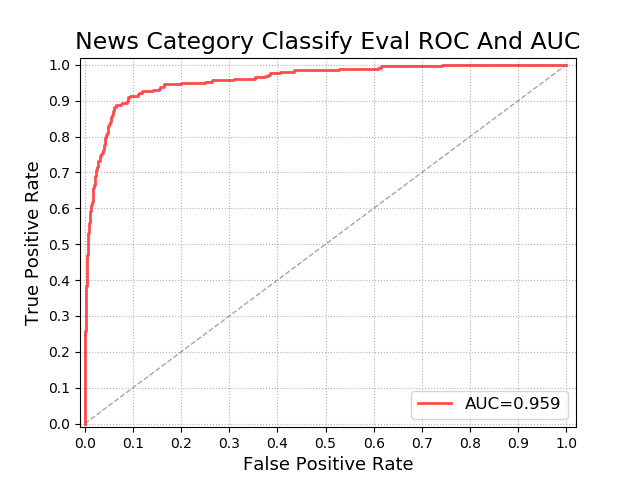
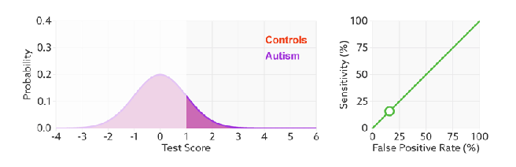

机器学习评价指标
本文将详细介绍机器学习分类任务的常用评价指标：准确率（Accuracy）、精确率（Precision）、召回率（Recall）、P-R曲线（Precision-Recall Curve）、F1 Score、混淆矩阵（Confuse Matrix）、ROC、AUC。
混淆矩阵
| 预测结果 | ||
|---|---|---|
| 真实类别 | 正例 | 负例 |
| 正例 | 真阳性（True Positive） TP | 假阴性（Ffalse Negative）FN |
| 负例 | 假阳性（False Positive） FP | 真阴性（True Negative）TN |
准确率（Accuracy）
准确率是分类问题中最为原始的评价指标，准确率的定义是预测正确的结果占总样本的百分比，其公式如下：
$$
Accuracy = \frac{TP+TN}{TP+TN+FP+FN}
$$
精确率（Precision）
精准率（Precision）又叫查准率，它是针对预测结果而言的，它的含义是在所有被预测为正的样本中实际为正的样本的概率：
$$
Precision = \frac{TP}{TP+FP}
$$
召回率（Recall）
召回率（Recall）又叫查全率，它是针对原样本而言的，它的含义是在实际为正的样本中被预测为正样本的概率：
$$
Recall = \frac{TP}{TP+FN}
$$
F1-Score
在不同的应用场景下，我们的关注点不同，例如，在预测股票的时候，我们更关心精准率，即我们预测升的那些股票里，真的升了有多少，因为那些我们预测升的股票都是我们投钱的。而在预测病患的场景下，我们更关注召回率，即真的患病的那些人里我们预测错了情况应该越少越好。
精确率和召回率是一对此消彼长的度量。例如在推荐系统中，我们想让推送的内容尽可能用户全都感兴趣，那只能推送我们把握高的内容，这样就漏掉了一些用户感兴趣的内容，召回率就低了；如果想让用户感兴趣的内容都被推送，那只有将所有内容都推送上，宁可错杀一千，不可放过一个，这样准确率就很低了。
在实际工程中，我们往往需要结合两个指标的结果，去寻找一个平衡点，使综合性能最大化。
在一些场景下要兼顾精准率和召回率，最常见的方法就是F-Measure，又称F-Score。F-Measure是P和R的加权调和平均，即：
$$
\frac{1}{F_{\beta}}=\frac{1}{1+\beta^{2}} \cdot\left(\frac{1}{P}+\frac{\beta^{2}}{R}\right)
$$
$$
F_{\beta}=\frac{\left(1+\beta^{2}\right) \times P \times R}{\left(\beta^{2} \times P\right)+R}
$$
特别地，当β=1时，也就是常见的F1-Score，是P和R的调和平均，当F1较高时，模型的性能越好。
$$
F1=\frac{2 \times P \times R}{P+R} = \frac{2 \times TP}{样例总数+TP-TN}
$$
ROC/AUC曲线
灵敏度、特异度、真阳率、假阳率
$$
Sensitivity = \frac{TP}{TP+FN}
$$
$$
Specificity=\frac{TN}{FP+TN}
$$
- 其实我们可以发现灵敏度和召回率是一模一样的，只是名字换了而已。
- 由于我们比较关心正样本，所以需要查看有多少负样本被错误地预测为正样本，所以使用（1- 特异度），而不是特异度。
$$
真阳率（TPR）=Sensitivity = \frac{TP}{TP+FN}
$$
$$
假阳率(FPR) = 1 - Specificity = \frac{FP}{FP+TN}
$$
TPR 和 FPR 分别是基于实际表现 1 和 0 出发的，也就是说它们分别在实际的正样本和负样本中来观察相关概率问题。
正因为如此，所以无论样本是否平衡，都不会被影响。还是拿之前的例子，总样本中，90% 是正样本，10% 是负样本。我们知道用准确率是有水分的，但是用 TPR 和 FPR 不一样。这里，TPR 只关注 90% 正样本中有多少是被真正覆盖的，而与那 10% 毫无关系，同理，FPR 只关注 10% 负样本中有多少是被错误覆盖的，也与那 90% 毫无关系，所以可以看出：如果我们从实际表现的各个结果角度出发，就可以避免样本不平衡的问题了，这也是为什么选用 TPR 和 FPR 作为 ROC/AUC 的指标的原因。
ROC曲线
ROC（Receiver Operating Characteristic）曲线，又称接受者操作特征曲线。ROC曲线中的主要两个指标就是真正率TPR和假正率FPR，上面已经解释了这么选择的好处所在。其中横坐标为假正率（FPR），纵坐标为真正率（TPR），下面就是一个标准的ROC曲线图。

阈值问题
ROC曲线是通过遍历所有阈值来绘制整条曲线的。如果我们不断的遍历所有阈值，预测的正样本和负样本是在不断变化的，相应的在ROC曲线图中也会沿着曲线滑动。

我们看到改变阈值只是不断地改变预测的正负样本数，即TPR和FPR，但是曲线本身并没有改变。这是有道理的，阈值并不会改变模型的性能。
判断模型性能
那么如何判断一个模型的ROC曲线是好的呢？这个还是要回归到我们的目的：FPR表示模型对于负样本误判的程度，而TPR表示模型对正样本召回的程度。我们所希望的当然是：负样本误判的越少越好，正样本召回的越多越好。所以总结一下就是**TPR越高，同时FPR越低（即ROC曲线越陡），那么模型的性能就越好。**参考如下动态图进行理解。

即：进行模型的性能比较时，与PR曲线类似，若一个模型A的ROC曲线被另一个模型B的ROC曲线完全包住，则称B的性能优于A。若A和B的曲线发生了交叉，则谁的曲线下的面积大，谁的性能更优。
AUC曲线
AUC(Area Under Curve)又称为曲线下面积，是处于ROC Curve下方的那部分面积的大小。上文中我们已经提到，对于ROC曲线下方面积越大表明模型性能越好，于是AUC就是由此产生的评价指标。通常，AUC的值介于0.5到1.0之间，较大的AUC代表了较好的Performance。如果模型是完美的，那么它的AUC = 1，证明所有正例排在了负例的前面，如果模型是个简单的二类随机猜测模型，那么它的AUC = 0.5，如果一个模型好于另一个，则它的曲线下方面积相对较大，对应的AUC值也会较大。